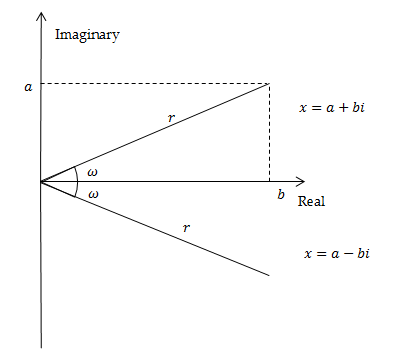
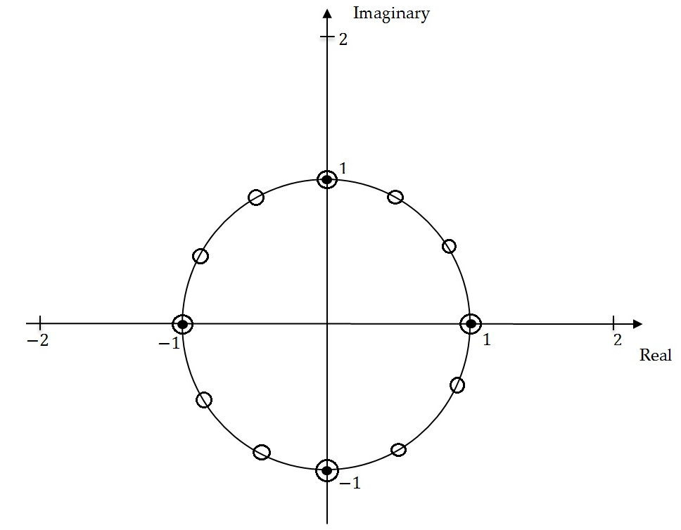
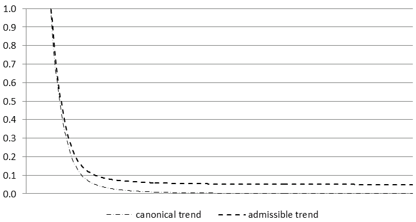
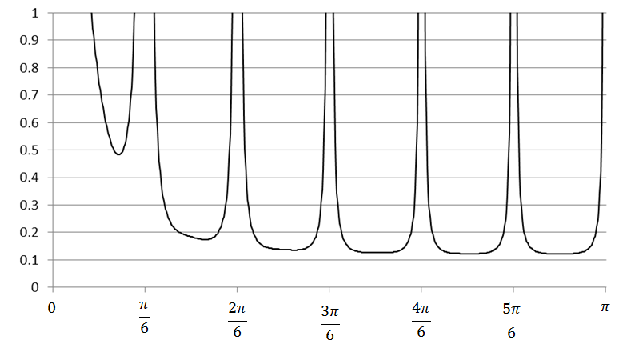
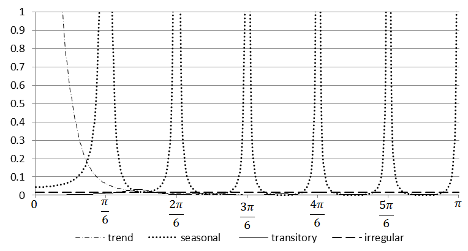
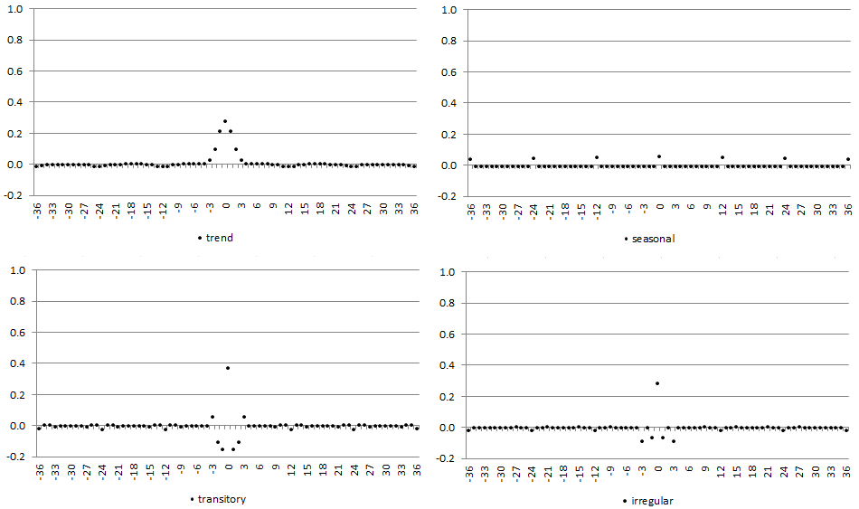
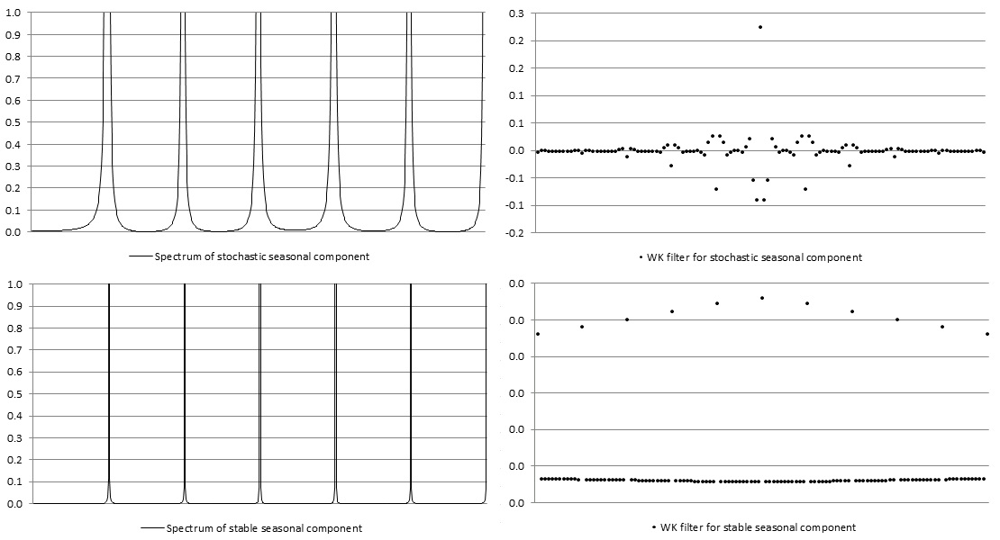
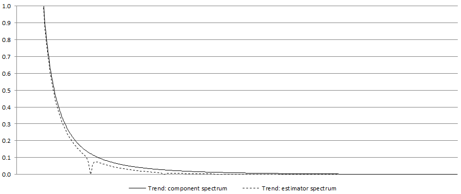
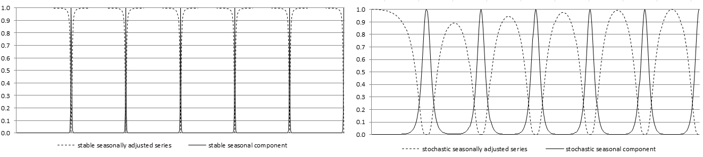
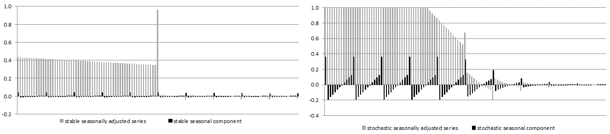

SEATS decomposition
Under construction.
Introduction
SEATS is a program for estimating unobserved components in a time series. It follows the ARIMA-model-based (AMB) method, developed from the work of CLEVELAND, W.P., and TIAO, G.C. (1976), BURMAN, J.P. (1980), HILLMER, S.C., and TIAO, G.C. (1982), BELL, W.R., and HILLMER, S.C. (1984) and MARAVALL, A., and PIERCE, D.A. (1987).
In JDemetra+ the input for the model based signal extraction procedure is always provided by TRAMO and includes the original series \(y_{t}\), the linearized series \(x_{t}\) (i.e. the original series \(y_{t}\) with the deterministic effects removed), the ARIMA model for the stochastic (linearized) time series \(x_{t}\) and the deterministic effects (calendar effects, outliers and other regression variable effects)1. SEATS decomposes the linearized series (and the ARIMA model) into trend, seasonal, transitory and irregular components, provides forecasts for these components, together with the associated standard errors, and finally assign the deterministic effects to each component yielding the final components2. The Minimum Mean Square Error (MMSE) estimators of the components are computed with a Wiener-Kolmogorov filter applied to the finite series extended with forecasts and backcasts3.
ARIMA modellling of the input series
One of the fundamental assumptions made by SEATS is that the linearized time series \(x_{t}\) follows the ARIMA model
\[ \phi(B)\delta\left( B \right)x_{t} = \theta(B)a_{t} \tag{1}\]
where:
\(B\) – the backshift operator \((Bx_{t} = x_{t - 1})\);
\(\delta\left( B \right)\) – a non-stationary autoregressive (AR) polynomial in \(B\) (unit roots);
\(\theta\left( B \right)\) – an invertible moving average (MA) polynomial in \(B\) and in \(B^{S}\), which can be expressed in the multiplicative form \(\left( 1 + \vartheta_{1}B + \ldots{+ \ \vartheta}{q}B^{q} \right)\left( \ 1 + \Theta{1}B^{s} + \ldots{+ \ \Theta}_{Q}B^{\text{sQ}} \right)\) ;
\(\phi(B)\) – a stationary autoregressive (AR) polynomial in \(B\) and in \(B^{S}\) containing regular and seasonal unit roots, with s representing the number of observations per year;
\(a_{t}\) – a white-noise variable with the variance\(\ V(a)\).
It should be noted that the stochastic time series can be predicted using its past observations and making an error. The variable \(a_{t}\), which is assumed to be white noise, is the fundamental innovation to the series at time t, that is the part that cannot be predicted based on the past history of the series.
Denoting \(\varphi\left( B \right) = \phi\left( B \right)\delta\left( B \right)\), Equation 1 can be written in a more concise form as
\[ \varphi\left( B \right)x_{t} = \theta(B)a_{t} \tag{2}\]
where \(\varphi\left( B \right)\) contains both the stationary and the nonstationary roots.
Derivation of the models for the components
Let us consider the additive decomposition model
\[ x_{t} = \sum_{i = 1}^{k}x_{\text{it}} \tag{3}\]
where i refers to the orthogonal components: trend, seasonal, transitory or irregular. Apart from the irregular component, supposed to be a white noise, it is assumed that each component follows the ARIMA model which can be represented, using the notation of Equation 2 , as:
\[ \varphi_{i}\left( B \right)\ x_{\text{it}} = \theta_{i}(B)a_{\text{it}} \tag{4}\]
where
\(\varphi_{i}\left( B \right) = \phi_{i}\left( B \right)\delta_{i}\left( B \right),\ \ x_{\text{it}}\) is the i-th unobserved component,
\(\varphi_{i}\left( B \right)\) and \(\theta_{i}\left( B \right)\) are finite polynomials of order \(p_{i}\) and \(q_{i}\), respectively,
\(a_{\text{it}}\), the disturbance associated with such component, is a white noise process with zero mean and constant variance \(V(a_{i})\) and \(a_{\text{it}}\) and \(a_{\text{jt}}\) are not correlated for \(i \neq j\) and for any \(t\)..
These disturbances are functions of the innovations in the series and are called “pseudo-innovations” in the literature concerning the AMB decomposition as they refer to the components that are never observed 4. In the JDemetra+ documentation the term “innovations” is used to refer to the “pseudo-innovations”.
The following assumptions hold for Equation 4 . For each \(\text{i}\) the polynomials \(\phi_{i}\left( B \right)\), \(\delta_{i}\left( B \right)\) and \(\theta_{i}(B)\) are prime and of finite order. The roots of \(\delta_{i}\left( B \right)\) lies on the unit circle; those of \(\phi_{i}\left( B \right)\) lie outside, while all the roots of \(\theta_{i}\left( B \right)\) are on or outside the unit circle. This means that nonstationary and noninvertible components are allowed. Since different roots of the AR polynomial induce peaks in the spectrum5 of the series at different frequencies, and given that different components are associated with the spectral peaks for different frequencies, it is assumed that for \(i \neq j\) the polynomials\(\ \phi_{i}\left( B \right)\) and \(\phi_{j}\left( B \right)\) do not share any common root (they are coprime). Finally, it is assumed that the polynomials \(\theta_{i}\left( B \right),\ i = 1,\ldots,k\) are prime share no unit root in common, guaranteeing the invertibility of the overall series. In fact, since the unit root of \(\theta_{i}\left( B \right)\) induce a spectral zero, when the polynomials \(\theta_{i}\left( B \right),\ i = 1,\ldots,k\) share no unit root in common, there is no frequency for which all component spectra become zero6.
Since aggregation of ARIMA models yields ARIMA models, the series \(x_{t}\) will also follow an ARIMA model, as in Equation 2 , and consequently the following identity can be derived:
\[ \frac{\theta(B)}{\varphi(B)}a_{t} = \sum_{i = 1}^{k}{\frac{\theta_{i}(B)}{\varphi_{i}(B)}a_{\text{it}}} \tag{5}\]
In the ARIMA model based approach implemented in SEATS, the ARIMA model identified and estimated for the observed series \(x_{t}\) is decomposed to derive the models for the components. In particular, the AR polynomials for the components, \(\varphi_{i}\left( B \right)\), are easily derived through the factorization of the AR polynomial \(\varphi\left( B \right)\):
\[ \varphi\left( B \right) = \prod_{i = 1}^{k}{\varphi_{i}\left( B \right)} \tag{6}\]
while the MA polynomials for the components, together with the innovation variances \(V(a_{i})\), cannot simply be obtained through the relationship:
\[ \theta(B)a_{t} = \sum_{i = 1}^{k}{\varphi_{\text{ni}}\left( B \right)}\theta_{i}(B)a_{\text{it}} \tag{7}\]
where \(\varphi_{\text{ni}}\left( B \right)\) is the product of all \(\varphi_{j}\left( B \right),\ j = 1,\ldots,k\), except from \(\varphi_{i}\left( B \right)\). Further assumptions are therefore needed to cope with the underidentification problem: i) \(p_{i} \geq q_{i}\) and ii) the canonical decomposition, i.e. the decomposition that allocate all additive white noise to the irregular component (yielding noninvertible components except the irregular).
To understand how SEATS factorizes the AR polynomials, first a concept of a root will be explored7.
The equation Equation 2 can be expressed as:
\[ \psi^{- 1}(B)x_{t} = a_{t}(1 + \varphi_{1}B + \ldots\varphi_{p}B^{p})x_{t} =(1 + \theta_{1}B + \ldots\theta_{q}B^{q})a_{t} \tag{8}\]
Let us now consider Equation 2 in the inverted form:
\[ \theta\left( B \right)y_{t} = \varphi(B)a_{t} \tag{9}\]
If both sides of Equation 8 are multiplied by \(x_{t - k}\) with \(k > q\), and expectations are taken, the right hand side of the equation vanishes and the left hand side becomes:
\[ \varphi(B)\gamma_{k} = \gamma_{k} + \varphi_{1}\gamma_{k - 1} + \ldots\varphi_{p}\gamma_{k - p} = 0 \tag{10}\]
where \(B\) operates on the subindex \(k\).
The autocorrelation function \(\gamma_{k}\) is a solution of Equation 10 with the characteristic equation:
\[ z^{p} + \varphi_{1}z^{p - 1} + \ldots\varphi_{p - 1}z + \varphi_{p} = 0 \tag{11}\]
If \(z_{1}\),…,\(\ z_{p}\) are the roots of Equation 11 , the solutions of Equation 10 can be expressed as:
\[ \gamma_{k} = \sum_{i = 1}^{p}z_{i}^{k} \tag{12}\]
and will converge to zero as \(k \rightarrow \infty\) when \(\left| r_{i} \right| < 1,\ i = 1,\ldots,p\). From Equation 10 and Equation 12 it can be noticed that \(z_{1} = B_{i}^{- 1}\), meaning that \(z_{1}\),…,\(\ z_{p}\) are the inverses of the roots \(B_{1},\ldots,B_{p}\) of the polynomial \(\varphi(B)\). The convergence of \(\gamma_{k}\) implies that the roots of the \(\varphi(B)\) are larger than 1 in modulus (lie outside the unit circle). Therefore, from the equation
\[ {\varphi(B)}^{- 1} = \frac{1}{(1 - z_{1})\ldots(1 - z_{1})} \tag{13}\]
it can be derived that \({\varphi(B)}^{- 1}\) is convergent and all its inverse roots are less than 1 in modulus.
Equation Equation 11 has real and complex roots (solutions). Complex number \(x = a + bi\), with \(a\) and \(\text{b}\) both real numbers, can be represented as \(x = r\left( cos(\omega) + i\ sin(\omega \right))\), where \(i\) is the imaginary unit\({\ (i}^{2} = - 1)\), \(r\) is the modulus of \(x\), that is \(\ r = \left| x \right| = \sqrt{a^{2} + b^{2}}\) and \(\omega\) is the argument (frequency). When roots are complex, they are always in pairs of complex conjugates. The representation of the complex number \(x = a + bi\) has a geometric interpretation in the complex plane established by the real axis and the orthogonal imaginary axis.

Representing the roots of the characteristic equation Equation 11 in the complex plane enhances understanding how they are allocated to the components. When the modulus \(r\) of the roots in \(\text{z}\) are greater than 1 (i.e. modulus of the roots in \(\varphi(B)\ < 1\)), the solution of the characteristic equation has a systematic explosive process, which means that the impact of the given impulse on the time series is more and more pronounced in time. This behaviour is not in line with the developments that can be identified in actual economic series. Therefore, the models estimated by TRAMO-SEATS (and X-13ARIMA-SEATS) have never inverse roots in \(B\) with modulus greater than 1.
The characteristic equations associated with the regular and the seasonal differences have roots in \(\varphi(B)\) with modulus \(r = 1\). They are called non-stationary roots and can be represented on the unit circle. Let us consider the seasonal differencing operator applied to a quarterly time series \((1 - B^{4})\). Its characteristic equation is \({(z}^{4} - 1) = 0\) with solutions given by\(\ z = \sqrt[4]{1}\), i.e. \(z_{1,2} = \pm 1\) and \(z_{3,4} = \pm i1\). The first two solutions are real and the last two are complex conjugates. They are represented by the black points on the unit circle on the figure below.

For the seasonal differencing operator \((1 - B^{12})\) applied to the monthly time series the characteristic equation \({\ (z}^{12} - 1) = 0\) has twelve non-stationary solutions given by\(\ z = \sqrt[12]{1}:\) two real and ten complex conjugates, represented by the white circles in unit roots figure above.
The complex conjugates roots generate the periodic movements of the type:
\[ z_{t} = A^{t}\cos\left( \omega t + W \right). \tag{14}\]
where:
\(A\) – amplitude;
\(\omega\) – angular frequency (in radians);
\(W\) – phase (angle at \(t = 0)\).
The frequency \(f\), i.e. the number of cycles per unit time, is \(\frac{\omega}{2\pi}\). If it is multiplied by s, the number of observations per year, the number of cycles completed in one year is derived. The period of function Equation 14 , denoted by \(\tau\), is the number of units of time (months/quarters) it takes for a full circle to be completed.
For quarterly series the seasonal movements are produced by complex conjugates roots with angular frequencies at \(\frac{\pi}{2}\) (one cycle per year) and \(\pi\) (two cycles per year). The corresponding number of cycles per year and the length of the movements are presented in the table below.
Seasonal frequencies for a quarterly time series
| Angular frequency (\(\omega\)) | Frequency (cycles per unit time) (\(f\)) | Cycles per year | Length of the movement measured in quarters (\(\tau\)) |
|---|---|---|---|
| \(\frac{\pi}{2}\) | 0.25 | 1 | 4 |
| \(\pi\) | 0.5 | 2 | 2 |
For monthly time series the seasonal movements are produced by complex conjugates roots at the angular frequencies: \(\frac{\pi}{6},\frac{\pi}{3}, \frac{\pi}{2}, \frac{2\pi}{3}, \frac{5\pi}{6}\) and \(\pi\). The corresponding number of cycles per year and the length of the movements are presented in the table below:
Seasonal frequencies for a monthly time series
| Angular frequency (\(\omega\)) | Frequency (cycles per unit time) (\(f\)) | Cycles per year | Length of the movement measured in months (\(\tau\)) |
|---|---|---|---|
| \(\frac{\pi}{6}\) | 0.083 | 1 | 12 |
| \(\frac{\pi}{3}\) | 0.167 | 2 | 6 |
| \(\frac{\pi}{2}\) | 0.250 | 3 | 4 |
| \(\frac{2\pi}{3}\) | 0.333 | 4 | 3 |
| \(\frac{5\pi}{6}\) | 0.417 | 5 | 2.4 |
| \(\pi\) | 0.500 | 6 | 2 |
In JDemetra+ SEATS assigns the roots of the AR full polynomial to the components according to their associated modulus and frequency, i.e.:8
Roots of \(\left( 1 - B \right)^{d}\) are assigned to trend component.
Roots of \(\ \left( 1 - B^{s} \right)^{d_{s}} = {((1 - B)(1 + B + \ldots + B^{s - 1}))}^{d_{s}}\) are assigned to the trend component (root of \({\left( 1 - B \right)}^{d_{s}}\)) and to the seasonal component (roots of \({(1 + B + \ldots + B^{s - 1})}^{d_{s}}\)).
When the modulus of the inverse of a real positive root of \(\varphi(B)\) is greater than \(k\) or equal to \(k\), where \(k\) is the threshold value controlled by the Trend boundary parameter(in the original SEATS it is controlled by rmod)9, then the root is assigned to the trend component. Otherwise it is assigned to the transitory component.
Real negative inverse roots of \(\text{ϕ}_{p}\left( B \right)\) associated with the seasonal two-period cycle are assigned to the seasonal component if their modulus is greater than k, where \(k\) is the threshold value controlled by the Seasonal boundary and the Seas. boundary (unique) parameters. Otherwise they are assigned to the transitory component.
Complex roots, for which the argument (angular frequency) is close enough to the seasonal frequency are assigned to the seasonal component. Closeness is controlled by the Seasonal tolerance and Seasonal tolerance (unique) parameters (in the original SEATS it is controlled by epsphi). Otherwise they are assigned to the transitory component.
If \(d_{s}\) (seasonal differencing order) is present and \(\text{Bphi} < 0\) (\(\text{Bphi}\) is the estimate of the seasonal autoregressive parameter), the real positive inverse root is assigned to the trend component and the other (\(s - 1\)) inverse roots are assigned to the seasonal component. When \(d_{s} = 0\), the root is assigned to the seasonal when \(\text{Bphi} < - 0.2\) and/or the overall test for seasonality indicates presence of seasonality. Otherwise it goes to the transitory component. Also, when \(\text{Bphi} > 0\), roots are assigned to the transitory component.
For further details about JDemetra+ parameters see section TramoSeats.
It should be highlighted that when\(\ Q > P\), where \(Q\) and \(P\) denote the orders of the polynomials \(\varphi\left( B \right)\) and \(\theta(B)\), the SEATS decomposition yields a pure MA \((Q - P)\) component (hence transitory). In this case the transitory component will appear even when there is no AR factor allocated to it.
Once these rules are applied, the factorization of the AR polynomial presented by Equation 2 yields to the identification of the AR polynomials for the components which contain, respectively, the AR roots associated with the trend component, the seasonal component and the transitory component.10
Then with the partial fraction expansion the spectrum of the final components are obtained.
For example, the Airline model for a monthly time series:
\[ (1 - B)(1 - B^{12})x_{t} = (1 + \theta_{1}B)(1 + \Theta_{1}B^{12})\ a_{t} \tag{15}\]
is decomposed by SEATS into the model for the trend component:
\[ (1 - B)(1 - B)c_{t} = (1 + \theta_{c,1}B + \theta_{c,2}B^{2})a_{c,t} \tag{16}\]
and the model for the seasonal component:
\[ \left( 1 + B + \ldots + B^{11} \right)s_{t} = \left( 1 + \theta_{s,1}B + \ldots + {\theta_{s,11}B}^{11} \right)a_{s,t}, \tag{17}\]
As a result, the Airline model is decomposed as follows: \[ \small \frac{(1 + \theta_{1}B)(1 + \Theta_{1}B^{12})}{(1 - B)(1 - B)}a_{t} = \frac{\left( 1 + \theta_{s,1}B + \ldots + {\theta_{s,11}B}^{11} \right)}{\left( 1 + B + \ldots + B^{11} \right)}a_{s,t} + \frac{(1 + \theta_{c,1}B + \theta_{c,2}B^{2})}{(1 - B)(1 - B)}a_{c,t} + u_{t} \tag{18}\]
The transitory component is not present in this case and the irregular component is the white noise.
The partial fractions decomposition is performed in a frequency domain. In essence, it consists in portioning of the pseudo-spectrum11 of \(x_{t}\) into additive spectra of the components. When the AMB decomposition of the ARIMA model results in the non-negative spectra for all components, the decomposition is called admissible12. In such case an infinite number of admissible decompositions exists, i.e. decompositions that yield the non-negative spectra of all components. Therefore, the MA polynomials and the innovation variances cannot be yet identified from the model of \(x_{t}\). As sketched above, to solve this underidentification problem and identify a unique decomposition, it is assumed that for each component the order of the MA polynomial is no greater than the order of the AR polynomial and the canonical solution of S.C. Hillmer and G.C. Tiao is applied13, i.e. all additive white noise is added to the irregular component As a consequence all components derived from the canonical decomposition, except from the irregular, have a spectral minimum of zero and are thus noninvertible14. Given the stochastic features of the series, it can be shown by that the canonical decomposition produces as stable as possible trend and seasonal components since it maximizes the variance of the irregular and minimizes the variance of the other components15. However, there is a price to be paid as canonical components can produce larger revisions in the preliminary estimators of the component16 than any other admissible decomposition.
The figure below represents the pseudo-spectrum for the canonical trend and an admissible trend.

A pseudo-spectrum is denoted by\(\ g_{i}(\omega)\), where \(\omega\) represents the angular frequency. The pseudo-spectrum of \(x_{\text{it}}\) is defined as the Fourier transform of ACGF of\(\ x_{t}\) which is expressed as:
\[ \frac{\psi_{i}\left( B \right)\psi_{i}\left( F \right)}{\delta_{i}\left( B \right)\delta_{i}\left( F \right)}V(a_{i}) \tag{19}\]
where:
\(\psi_{i}\left( F \right) = \frac{\theta_{i}\left( F \right)}{\phi_{i}\left( F \right)}\)
\(\psi_{i}\left( B \right) = \frac{\theta_{i}\left( B \right)}{\phi_{i}\left( B \right)}\)
\(B\) is the backward operator,
\(F\) is the forward operator.
A pseudo-spectrum for a monthly time series \(x_{t}\) is presented in the figure below: The pseudo-spectrum for a monthly series. The frequency \(\omega = 0\) is associated with the trend, frequencies in the range [\(0 + \epsilon_{1},\ \frac{\pi}{6} - \epsilon_{2}\)] with \(\left[0 + \epsilon_{1},\ \frac{\pi}{6} - \epsilon_{2}\right]\) \(\epsilon_{1},\ \epsilon_{2} > 0\) and \(\epsilon_{1} < \ \frac{\pi}{6} - \epsilon_{2}\) are usually associated with the business-cycle and correspond to a period longer than a year and bounded17. The frequencies in the range [\(\frac{\pi}{6},\pi\)] are associated with the short term movements, whose cycle is completed in less than a year. If a series contains an important periodic component, its spectrum reveals a peak around the corresponding frequency and in the ARIMA model it is captured by an AR root. In the example below spectral peaks occur at the frequency \(\omega = 0\) and at the seasonal frequencies ( \(\frac{\pi}{6}\), \(\frac{2\pi}{6},\ \frac{3\pi}{6},\ \frac{4\pi}{6},\frac{5\pi}{6},\pi\)). 18

In the decomposition procedure, the pseudo-spectrum of the time series \(x_{t}\) is divided into the spectra of its components (in the example figure below, four components were obtained).

Estimation of the components with the Wiener-Kolmogorow filter
The various components are estimated using Wiener-Kolmogorow (WK) filters. JDemetra+ includes three options to estimate the WK filter, namely Burman, KalmanSmoother and MCElroyMatrix19. Here the first of abovementioned options, proposed by BURMAN, J.P. (1980) will be explained.
The estimation procedure and the properties of the WK filter are easier to explain with a two-component model. Let the seasonally adjusted series (\(s_{t}\)) be the signal of interest and the seasonal component (\(n_{t}\)) be the remainder, “the noise”. The series is given by the model Equation 2 and from Equation 4 the models for theoretical components are:
\[ \varphi_{s}(B)s_{t} = \theta_{s}(B)a_{\text{st}} \tag{20}\]
and
\[ \varphi_{n}(B)n_{t} = \theta_{n}(B)a_{\text{nt}} \tag{21}\]
From Equation 6 and Equation 7 it is clear that \(\varphi\left( B \right) = \varphi_{s}(B)\varphi_{n}(B)\) and \(\theta\left( B \right)a_{t} = \theta_{s}(B)a_{\text{st}}+\theta_{n}(B)a_{\text{nt}}\).
As the time series components are never observed, their estimators have to be used. Let us note \(X_{T}\) an infinite realization of the time series \(x_{t}\). SEATS computes the Minimum Mean Square Error (MMSE) estimator of \(s_{t}\), e.g. the estimator \(\widehat{s}_{t}\) that minimizes \(E\lbrack\left({s_{t}-{\widehat{s}}_{t})}^{2}|X_{T} \right)\rbrack\). Under the normality assumption \({\widehat{s}}_{t|T}\) is also equal to the conditional expectation \(E\left(s_{t}|X_{T}\right)\), so it can be presented as a linear function of the elements in \(X_{T}\).20 WHITTLE (1963) shows that the MMSE estimator of \({\widehat{s}}_{t}\) is:
\[ {\widehat{s}}_{t} = k_{s}\frac{\psi_{s}(B)\psi_{s}(F)}{\psi(B)\psi(F)}x_{t} \tag{22}\]
where
\(\psi(B)= \frac{\theta(B)}{\phi(B)}\),
\(F = B^{- 1}\),
\(k_{s}=\frac{V(a_{s})}{V(a)}\),
\(V(a_{s})\) is the variance of \(a_{st}\) and \(V(a)\) is the variance of \(a_{t}\).
Expressing the \(\psi\left(B\right)\) polynomials as functions of the AR and MA polynomials, after cancelation of roots, the estimator of \(s_{t}\) can be expressed as:
\[ {\widehat{s}}_{t} = k_{s}\frac{\theta_{s}\left(B\right)\theta_{s}\left(F\right)\varphi_{n}\left(B \right)\delta_{n}\left(B\right)\varphi_{n}\left(F\right)\delta_{n}\left(F\right)}{\theta\left(B\right)\theta\left(F \right)}x_{t} \tag{23}\]
where:
\[ \nu_{s}\left( B,F \right) = k_{s}\frac{\theta_{s}\left( B \right)\theta_{s}\left( F \right)\varphi_{n}\left( B \right)\delta_{n}\left( B \right)\varphi_{n}\left( F \right)\delta_{n}\left( F \right)}{\theta\left( B \right)\theta\left( F \right)} \tag{24}\]
is a WK filter.
Equation Equation 24 shows that the WK filter is two-sided (uses observations both from the past and from the future), centered (the number of points in the past is the same as in the future) and symmetric (for any \(k\) the weight applied to \(x_{t - k}\) and \(x_{t + k}\) is the same), which allows the phase effect to be avoided. Due to invertibility of \(\theta\left( B \right)\) (and \(\theta\left( F \right)\)) the filter is convergent in the past and in the future.
The estimator can be presented as
\[ {\widehat{s}}_{t} = \nu_{i}\left(B,F\right)x_{t} \tag{25}\]
where \(\nu_{i}\left(B,F\right)=\nu_{0}+ \sum_{j = 1}^{\infty}\nu_{ij}(B^{j}+F^{j})\) is the WK filter.
The example of the WK filters obtained for the pseudo-spectra of the series illustrated above is shown on the figure below: WK filters for components.

The WK filter from Equation 24 can also be expressed as a ratio of two pseudo-autocovariance generating functions (p-ACGF). The p-ACGF function summarizes the sequence of absolutely summable autocovariances of a stationary process \(x_{t}\) (see section section Spectral Analysis).
The ACGF function of an ARIMA process is expressed as:
\[ acgf(B) = \frac{\theta\left( B \right)\theta\left( F \right)}{\phi\left( B \right)\delta\left( B \right)\phi\left( F \right)\delta\left( F \right)}V(a) \tag{26}\]
And, the WK filter can be rewritten as:
\[ \nu_{s}\left( B,F \right) = \frac{\gamma_{s}(B,F)}{\gamma(B,F)} \tag{27}\]
where:
\(\gamma_{s}\left( B,F \right) = \frac{\theta_{s}\left( B \right)\theta_{s}\left( F \right)}{\phi_{s}\left( B \right)\delta_{s}\left( B \right)\phi_{s}\left( F \right)\delta_{s}\left( F \right)}V(a_{s})\) is the p-ACGF of \(s_{t}\);
\(\gamma\left( B,F \right) = \frac{\theta\left( B \right)\theta\left( F \right)}{\phi\left( B \right)\delta\left( B \right)\phi\left( F \right)\delta\left( F \right)}V(a)\) is the p-ACGF of \(x_{t}\).
From Equation 24 it can be seen that the WK filter depends on both the component and the series models. Consequently, the estimator of the component and the WK filter reflect the characteristic of data and by construction, the WK filter adapts itself to the series under consideration. Therefore, the ARIMA model is of particular importance for the SEATS method. Its misspecification results in an incorrect decomposition.
This adaptability, if the model has been correctly determined, avoids the dangers of under and overestimation with an ad-hoc filtering. For example, for the series with a highly stochastic seasonal component the filter adapts to the width of the seasonal peaks and the seasonally adjusted series does not display any spurious seasonality21. Examples of WK filters for stochastic and stable seasonal components are presented on the figure below.

The derivation of the components requires an infinite realization of \(x_{t}\) in the direction of the past and of the future. However, the convergence of the WK filter guarantees that, in practice, it could be approximated by a truncated (finite) filter and, in most applications, for large \(k\) the estimator for the central periods of the series can be safely seen as generated by the WK filter22:
\[ {\widehat{s}}_{t}=\nu_{k}x_{t-k} + \ldots + \nu_{0}x_{t} + \ldots + \nu_{k}x_{t+k} \tag{28}\]
When \(T > 2L + 1\), where \(T\) is the last observed period, and \(L\) is an a priori number that typically expands between 3 and 5 years, the estimator expressed by Equation 23 can be assumed as the final (historical) estimator for the central observations of the series23. In practice, the Wiener-Kolmogorov filter is applied to \(x_{t}\) extended with forecasts and backcasts from the ARIMA model. The final or historical estimator of \({\widehat{s}}_{t}\), is obtained with a doubly infinite filter, and therefore contains an error \(e_{st}\) called final estimation error, which is equal \(e_{st}=s_{t}-{\widehat{s}}_{t}\).
In the frequency domain, the Wiener-Kolmogorov filter\(\ \nu(B,F)\) that provides the final estimator of \(s_{t}\) is expressed as the ratio of the \(s_{t}\) and \(x_{t}\) pseudo-spectra:
\[ \widetilde{\nu}\left( \omega \right) = \frac{g_{s}(\omega)}{g_{x}(\omega)} \tag{29}\]
The function \(\widetilde{\nu}\left( \omega \right)\) is also referred as the gain of the filter.24 GÓMEZ, V., and MARAVALL, A. (2001a) show that when for some frequency the signal (the seasonally adjusted series) dominates the noise (seasonal fluctuations) the gain \(\widetilde{\nu}\left( \omega \right)\) approaches 1. On the contrary, when for some frequency the noise dominates the gain \(\widetilde{\nu}\left( \omega \right)\) approaches 0.
The spectrum of the estimator of the seasonal component is expressed as:
\[ g_{\widehat{s}}\left( \omega \right) = \left\lbrack \frac{g_{s}(\omega)}{g_{x}(\omega)} \right\rbrack^{2}g_{x}(\omega) \tag{30}\]
where
- \(\ \left\lbrack \widetilde{\nu}\left( \omega \right) \right\rbrack^{2} = \left\lbrack \frac{g_{s}(\omega)}{g_{x}(\omega)} \right\rbrack^{2} = \left\lbrack \frac{g_{s}(\omega)}{g_{s}(\omega) + g_{n}(\omega)} \right\rbrack^{2} = \left\lbrack \frac{1}{1 + \frac{1}{r(\omega)}} \right\rbrack^{2}\) is the squared gain of the filter ;
- \(r\left( \omega \right) = \frac{g_{s}(\omega)}{g_{n}(\omega)}\) represents the signal-to-noise ratio.
For each \(\omega\), the MMSE estimation gives the signal-to-noise ratio. If this ratio is high, then the contribution of that frequency to the estimation of the signal will be also high. Assume that the trend is a signal that needs to be extracted from a seasonal time series. Then \(R\left( 0 \right) = 1\) and the frequency \(\omega = 0\) will only be used for trend estimations. For seasonal frequencies \(R\left( \omega \right) = 0\), so that these frequencies are ignored in computing the trend resulting in spectral zeros in \(g_{\widehat{s}}\left( \omega \right)\). For this reason, unlike the spectrum of the component, the component spectrum contains dips as it can be seen on the figure below: Component spectrum and estimator spectrum for trend.

From the equation Equation 29 it is clear that the squared gain of the filter determines how the variance of the series contributes to the variance of the seasonal component for the different frequencies. When \(\widetilde{\nu}\left( \omega \right) = 1\), the full variation of \(x_{t}\) for that frequency is passed to \({\widehat{s}}_{t}\), while if \(\widetilde{\nu}\left(\omega\right) = 0\) the variation of \(x_{t}\) for that frequency is fully ignored in the computation of \({\widehat{s}}_{t}\). These two cases are well illustrated by the figure below that shows the square gain of the WK filter for two series already analysed in the figure above (Figure: WK filters for stable and stochastic seasonal components).

Since \(r\left( \omega \right) \geq 0\), then \(\widetilde{\nu}\left( \omega \right) \leq 1\) and from Equation 29 it can be derived that \(g_{\widehat{s}}\left( \omega \right) = \widetilde{\nu}\left( \omega \right)g_{s}(\omega)\). As a result, the estimator will always underestimate the component, i.e. it will be always more stable that the component.25
Since \(g_{\widehat{n}}\left( \omega \right) < g_{n}\left( \omega \right)\) and\(\ g_{\widehat{s}}\left( \omega \right) < g_{s}\left( \omega \right)\) the expression: \(g_{x}\left( \omega \right) - \left\lbrack g_{\widehat{n}}\left( \omega \right) + g_{\widehat{s}}\left( \omega \right) \right\rbrack \geq 0\) is the cross-spectrum. As it is positive, the MMSE yields correlated estimators. This effect emerges since variance of estimator is smaller than the variance of component. Nevertheless, if at least one non-stationary component exists, cross-correlations estimated by TRAMO-SEATS will tend to zero as cross-covariances between estimators of the components are finite. In practice, the inconvenience caused by this property will likely be of little relevance.
Preliminary estimators for the components
GÓMEZ, V., and MARAVALL, A. (2001a) point out that the properties of the estimators have been derived for the final (or historical) estimators. For a finite (long enough) realization, they can be assumed to characterize the estimators for the central observations of the series, but for periods close to the beginning of the end the filter cannot be completed and some preliminary estimator has to be used. Indeed, the historical estimator shown in Equation 28 is obtained for the central periods of the series. However, when \(t\) approaches \(T\) (last observation), the WK filter requires observations, which are not available yet. For this reason a preliminary estimator needs to be used.
To introduce preliminary estimators let us consider a semi-finite realization \(\lbrack x_{- \infty}\),…\(\ x_{T}\)], where \(T\) is the last observed period. The preliminary estimator of \(x_{\text{it}}\) obtained at \(T\), \((T - t = k \geq 0)\) can be expressed as
\[ {\widehat{x}}_{it|t + k}=\nu_{i}\left(B,F\right)x_{t|T}^{e} \tag{31}\]
where
\(\nu_{i}\left(B,F \right)\) is the WK filter ;
\(x_{t|T}^{e}\) is the extended series, such that \(x_{t|T}^{e} = x_{t}\) for \(t \leq T\) and \(x_{t|T}^{e}={\widehat{x}}_{t|T}\) for \(t>T\), where \({\widehat{x}}_{t|T}\) denotes the forecast of \(x_{t}\) obtained at period \(T\).
The future \(k\) values necessary to apply the filter are not yet available and are replaced by their optimal forecasts from the ARIMA model on \(x_{t}\). When \(k=0\) the preliminary estimator becomes the concurrent estimator. As the forecasts are linear functions of present and past observations of \(x_{t}\), the preliminary estimator \({\widehat{x}}_{it}\) will be a truncated asymmetric filter applied to \(x_{t}\) that generates a phase effect26.
When a new observation \(x_{T + 1}\) becomes available the forecast \({\widehat{x}}_{T + 1|T}\) is replaced by the observation and the forecast \({\widehat{x}}_{iT + j|T}\), \(j > 1\) are updated to \(x_{T + j|T + 1}\) resulting in the revision error27. The total error in the preliminary estimator \(d_{it|t + k}\) is expressed as a sum of the final estimation error (\(e_{it}\)) and the revision error (\(r_{it|t + k}\)), i.e.:
\[ d_{it|t + k} = x_{it}-{\widehat{x}}_{it|t + k} = \left(x_{it} - {\widehat{x}}_{it}\right) + \left( {\widehat{x}}_{it} - {\widehat{x}}_{it|t + k} \right) = e_{it} + r_{it|t + k} \tag{32}\]
where:
\(x_{it}-i^{th}\) component;
\({\widehat{x}}_{it|t + k}\)- the estimator of \(x_{it}\) when the last observation is \(x_{t + k}\).
Therefore the preliminary estimator is subject not only to the final error but also to a revision error, which are orthogonal to each other28. The revision error decreases as \(k\) increases, until it can be assumed equal to 0 for large enough \(k\).
It’s worth remembering that SEATS estimates the unobservable components of the time series so the “true” components are never observed. Therefore, MARAVALL, A. (2009) stresses that the error in the historical estimator is more of academic rather than practical interest. In practice, interest centres on revisions. (…) the revision standard deviation will be an indicator of how far we can expect to be from the optimal estimator that will be eventually attained, and the speed of convergence of \({\theta\left( B \right)\ }^{- 1}\) will dictate the speed of convergence of the preliminary estimator to the historical one. The analysis of an error is therefore useful for making decision concerning the revision policy, including the policy for revisions and horizon of revisions.
PsiE-weights
The estimator of the component is calculated as \({\widehat{x}}_{it} = \nu_{s}\left(B,F\right)x_{t}\). By replacing \(x_{it}=\frac{\theta(B)}{\gamma(B)\delta(B)}a_{t}\), the component estimator can be expressed as29:
\[ {\widehat{x}}_{it} = \xi_{s}\left(B,F\right)a_{t} \tag{33}\]
where \(\xi_{s}\left( B,F \right) = \ldots + \xi_{j}B^{j} + \ldots + \xi_{1}B + \xi_{0} + \xi_{- 1}F\ldots\xi_{- j}F^{j} + \ldots\).
This representation shows the estimator as a filter applied to the innovation \(a_{t}\), rather than on the series \(x_{t}\)30. Hence, the filter from Equation 32 can be divided into two components: the first one, i.e. \(\ldots + \xi_{j}B^{j}+ \ldots+ \xi_{1}B + \xi_{0}\), applies to prior and concurrent innovations, the second one, i.e. \(\xi_{- 1}F + \ldots + \xi_{- j}F^{j}\) applies to future (i.e. posterior to \(t\)) innovations. Consequently, \(\xi_{j}\) determines the contribution of \(a_{t - j}\) to \({\widehat{s}}_{t}\) while \(\xi_{- j}\) determines the contribution of \(a_{t + j}\) to \({\widehat{s}}_{t}\). Finally, the estimator of the component can be expressed as:
\[ {\widehat{x}}_{it} =\xi_{i}(B)^{-}a_{t} + \xi_{i}(F)^{+}a_{t + 1} \tag{34}\]
where:
\(\xi_{i}{(B)}^{-}a_{t}\) is an effect of starting conditions, present and past innovations in series;
\(\xi_{i}{(F)}^{+}a_{t + 1}\) is an effect of future innovations.
For the two cases already presented in figure WK filters for stable and stochastic seasonal components and figure The squared gain of the WK filter for stable and stochastic seasonal components above, the psi-weights are shown in the figure below.

It can be shown that \({\xi}_{- 1},\ldots,\xi_{- j}\) are convergent and \(\xi_{j},\ldots, {\xi}_{1},\xi_{0}\) are divergent. From Equation 33 , the concurrent estimator is equal to
\[ {\widehat{x}}_{it|t} = E_{t}x_{it}=E_{t}{\widehat{x}}_{it} = {\xi}_{i}(B)^{-}a_{t} \tag{35}\]
so that the revision
\[ r_{it} = {\widehat{x}}_{it} - {\widehat{x}}_{it|t} = \xi_{i}(F)^{+}a_{t + 1} \tag{36}\]
is a zero-mean stationary MA process. As a result, historical and preliminary estimators are cointegrated. From expression Equation 25 the relative size of the full revision and the speed of convergence can be obtained.
In the original software SEATS can be used either with TRAMO, operating on the input received from the latter, or alone, fitting an ARIMA model to the series.↩︎
GÓMEZ, V., and MARAVALL, A. (1998).↩︎
GÓMEZ, V., and MARAVALL, A. (1997).↩︎
GÓMEZ, V., and MARAVALL, A. (2001a).↩︎
For description of the spectrum see section Spectral Analysis.↩︎
MARAVALL, A. (1995).↩︎
Description based on KAISER, R., and MARAVALL, A. (2000) and MARAVALL, A. (2008c).↩︎
For details see MARAVALL, A., CAPORELLO, G., PÉREZ, D., and LÓPEZ, R. (2014).↩︎
In JDemetra+ this argument is called Trend boundary.↩︎
The AR roots close to or at the trading day frequency generates a stochastic trading day component. A stochastic trading day component is always modelled as a stationary ARMA(2,2), where the AR part contains the roots close to the TD frequency, and the MA(2) is obtained from the model decomposition (MARAVALL, A., and PÉREZ, D. (2011)). This component, estimated by SEATS, is not implemented by the current version of JDemetra+.↩︎
The term pseudo-spectrum is used for a non-stationary time series, while the term spectrum is used for a stationary time series.↩︎
If the ARIMA model estimated in TRAMO does not accept an admissible decomposition, SEATS replaces it with a decomposable approximation. The modified model is therefore used to decompose the series. There are also other rare situations when the ARIMA model chosen by TRAMO is changed by SEATS. It happens when, for example, the ARIMA models generate unstable seasonality or produce a senseless decomposition. Such examples are discussed by MARAVALL, A. (2009).↩︎
HILLMER, S.C., and TIAO, G.C. (1982).↩︎
GÓMEZ, V., and MARAVALL, A. (2001a).↩︎
HILLMER, S.C., and TIAO, G.C. (1982).↩︎
MARAVALL, A. (1986).↩︎
KAISER, R., and MARAVALL, A. (2000).↩︎
KAISER, R., and MARAVALL, A. (2000).↩︎
The choice of the estimation method is controlled by the Method parameter, explained in the SEATS specification section.↩︎
MARAVALL, A. (2008c).↩︎
MARAVALL, A. (1995).↩︎
MARAVALL, A., and PLANAS, C. (1999).↩︎
MARAVALL, A. (1998).↩︎
GÓMEZ, V., and MARAVALL, A. (2001a).↩︎
Ibid.↩︎
KAISER, R., and MARAVALL, A. (2000).↩︎
MARAVALL, A. (1995).↩︎
MARAVALL, A. (2009).↩︎
The section is based on KAISER, R., and MARAVALL, A. (2000).↩︎
See section PsiE-weights. For further details see MARAVALL, A. (2008).↩︎